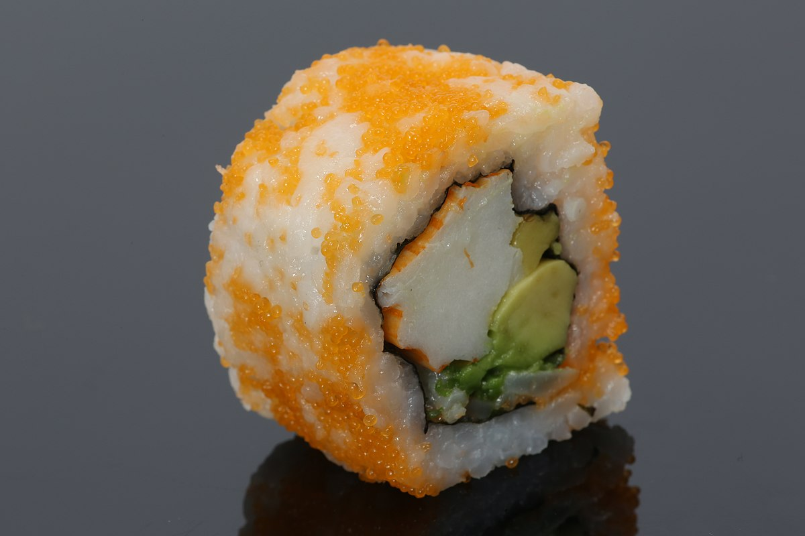

Highly Reccomended Sushi
Dragon Roll
The Dragon Roll is one of the most known sushis of all time. It is prepared on a dish in a dragon-like roll, hence the name, the dragon roll. The dragon roll mainly consists of avacado, sriracha, cucumbers, and shrimp, but some recipes include mango. The artistic balance of flavors between sweet and spicy make it one of the best sushi out there!
California Roll
The California Roll is one of the most well known sushis, once again. It's origin is unknown, but it most likely comes from california given the name. The ingredients consist of avacado and crab meat wrapped in the ordinary seaweed and rice combo. Although the sushi is very simple, the flavor still remains strong is is very popular around the world.
Saba Sushi
The saba sushi is a very unique sushi that most people don't know about. The ingredients are very simple. All you need is some rice and a mackarel, which is the origin of the name Saba. Saba sushi has been often described as flavorful and strong, so it the flavor only suits some people as opposed to the previous two. However, it is still widely regarded as an amazing sushi and I would reccomened it.